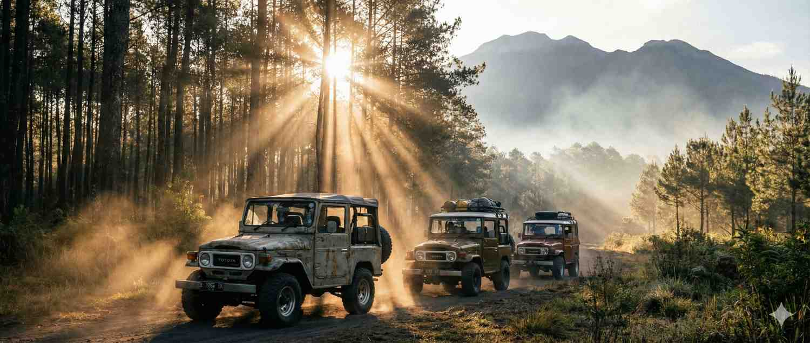
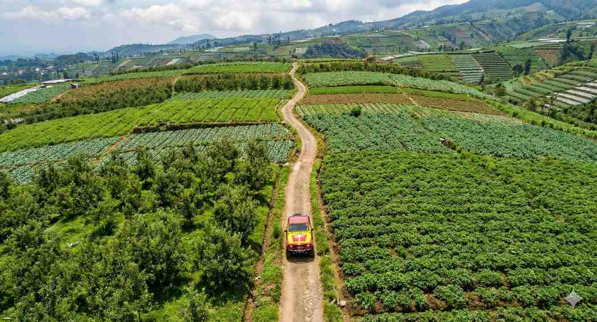

5 Tips Aman Offroad
Panduan keselamatan lengkap bagi Anda yang ingin memulai hobi offroad...
Baca SelengkapnyaPetualangan | Oleh Admin | 10 Feb 2024

Pemandangan megah lereng Gunung Arjuno yang menanti petualangan Anda.Batu Malang kembali menawarkan kejutan bagi para pecinta alam dengan pembukaan jalur offroad baru di lereng Gunung Arjuno yang sangat menawan.
Jalur ini diawali dengan perlintasan sungai kecil dengan dasar berbatu yang menantang. Suara gemericik air yang jernih berpadu dengan menderunya mesin Jeep menciptakan simfoni petualangan yang tak terlupakan. Anda akan merasakan sensasi ban yang memecah aliran air dingin khas pegunungan.
Saat musim hujan, debit air sungai ini bisa sedikit meningkat, memberikan tantangan tambahan bagi Jeep kami untuk menyeberang. Namun jangan khawatir, desain asupan udara (*snorkel*) pada Jeep kami memastikan mesin tetap aman dari kemasukan air, memberikan ketenangan pikiran selama Anda menikmati keseruan ini.
Driver kami menggunakan teknik *momentum* yang terjaga agar Jeep tidak terjebak di sela-sela batu sungai yang licin. Pastikan Anda mengangkat kaki dan tangan saat Jeep mulai memecah air untuk menghindari cipratan yang mungkin masuk ke kabin terbuka.
Setelah area sungai, kita akan mendaki lereng dengan kemiringan hingga 35 derajat yang cukup menguras adrenalin. Di sinilah kemampuan optimal 4x4 Jeep kami diuji secara maksimal. Anda akan melihat kepiawaian driver kami dalam memilih jalur rintis yang paling efektif untuk mendaki tanpa membuat ban kehilangan traksi.
Pastikan Anda berpegangan erat dan menikmati pemandangan hutan rimbun yang perlahan-lahan mulai terbuka menampakkan cakrawala Kota Batu dari ketinggian. Pada hari yang cerah, Anda bahkan bisa melihat puncak Gunung Semeru yang mengintip di kejauhan.
"Jalur Arjuno bukan hanya soal menaklukkan medan, tapi juga soal menghargai keindahan ciptaan Tuhan yang tersembunyi di balik hutan rimbun."
Aromanya yang khas dari bunga kopi atau buah yang sedang ranum akan menemani sepanjang perjalanan. Anda bisa melihat langsung para petani kopi lokal yang ramah saat sedang merawat tanaman mereka di ketinggian pegunungan Arjuno yang sejuk.
Kopi Arjuno dikenal karena rasanya yang kuat dengan sedikit sentuhan rasa cokelat karena ditanam di tanah vulkanik yang kaya nutrisi. Di jalur ini, Anda bisa memahami sedikit banyak tentang proses penanaman kopi organik yang menjadi andalan warga lereng pegunungan ini.
Kami telah memetakan 3 titik terbaik untuk berfoto dengan latar belakang Kota Batu yang terlihat mungil dari ketinggian. Sempurna untuk konten media sosial atau sekadar koleksi foto kenangan keluarga.
Tips dari kami: Gunakan lensa *wide* untuk menangkap luasnya panorama lembah, atau cobalah berpose berdiri di samping pintu Jeep untuk mendapatkan kesan petualang sejati. Waktu terbaik adalah pagi hari saat kabut tipis masih menyelimuti lembah.
 Salah satu spot pemberhentian dengan latar panorama lembah
hijau yang luar biasa.
Salah satu spot pemberhentian dengan latar panorama lembah
hijau yang luar biasa.
Jalur Arjuno adalah pilihan tepat bagi Anda yang mencari tantangan lebih dan ingin melihat sisi lain keindahan Batu Malang yang masih sangat terjaga kealamiannya. Kombinasi medan sungai, hutan, dan perkebunan menjadikannya rute paling lengkap tahun ini.
Jangan hanya menjadi penonton, mari rasakan sendiri sensasi menderunya mesin Jeep di tengah hutan Arjuno yang megah. Segera pesan seat Anda dan jadilah saksi keindahannya bersama Jeep Fun Offroad Batu!